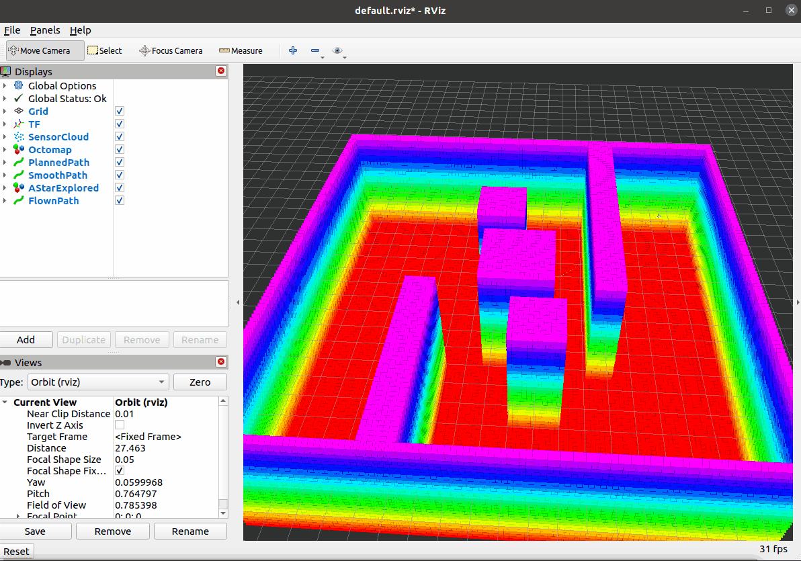

路径跟踪与闭环飞行
本文介绍空域载具八叉树三维寻路项目中的闭环环节：把前面几节规划出的路径 逐点交给控制器，让载具真的飞过去。
对应总纲第 7 节。
1. 运行节点与话题关系
本节新增一个节点 path_follower，其余节点沿用前几节。
roslaunch octree_uav_3d_pathfinding full_demo.launch 会启动下图除模拟器以外的全部节点：
AirSim 模拟器
RPC 41451"] subgraph VM["Ubuntu 虚拟机 (ROS Noetic)"] BR["airsim_bridge
桥接节点"] MAP["pointcloud_to_octomap
建图节点"] PLAN["astar_planner
规划与平滑节点"] FOL["path_follower
路径跟踪节点"] RVIZ["rviz"] end SIM -->|"RPC 41451 取点云与位姿"| BR BR -->|"/cloud_in"| MAP BR -->|"TF world→base_link→lidar_link"| PLAN MAP -->|"/octomap_full"| PLAN USER(["用户目标 /uav/goal"]) -->|"只触发规划"| PLAN PLAN -->|"/uav/path_smooth"| FOL BR -->|"/ground_truth/odom 20 Hz"| FOL FOL -->|"/uav/goal_cmd
逐点航点"| BR BR -->|"/uav/goal_cmd 转 moveToPositionAsync"| SIM PLAN -->|"/uav/path
原始折线"| RVIZ PLAN -->|"/uav/path_smooth
平滑路径"| RVIZ FOL -->|"/uav/flown_path
实际轨迹"| RVIZ
1.1 各节点的职责
| 节点 | 可执行文件 | 本节相关的职责 |
|---|---|---|
airsim_bridge |
scripts/airsim_bridge.py |
发布 /cloud_in、/ground_truth/odom 与 TF；订阅控制话题，把航点转成 AirSim 的 moveToPositionAsync |
pointcloud_to_octomap |
src/pointcloud_to_octomap.cpp |
点云 → 八叉树地图（本节不涉及） |
astar_planner |
src/astar_planner.cpp |
订阅 /uav/goal 与地图，输出 /uav/path 与 /uav/path_smooth |
path_follower |
src/path_follower.cpp |
订阅路径与位姿，判断"该追哪个航点"，向控制话题逐点下发 |
rviz |
— | 显示两条规划路径与实际飞过的轨迹 |
1.2 话题
| 话题 | 方向 | 类型 | 说明 |
|---|---|---|---|
/uav/goal |
用户 → 规划器 | geometry_msgs/Point |
只触发规划，不直接控制飞行 |
/uav/goal_cmd |
跟踪 → 桥接 | geometry_msgs/Point |
当前要飞的航点 |
/uav/path_smooth |
规划 → 跟踪 | nav_msgs/Path |
要跟踪的路径（默认；可切 /uav/path） |
/ground_truth/odom |
桥接 → 跟踪 | nav_msgs/Odometry |
位姿，20 Hz，位置是 ROS 世界系 ENU |
/uav/follow_status |
跟踪 → RViz | std_msgs/String |
IDLE / FOLLOWING i/N / DONE |
/uav/flown_path |
跟踪 → RViz | nav_msgs/Path |
实际飞过的轨迹，与规划路径同屏对比 |
2. 需要先解决的一个结构性问题
/uav/goal 被两个节点同时订阅：规划器订阅它来规划，桥接节点订阅它来飞。
如果跟踪节点也往 /uav/goal 逐点发航点，就会出现：
path_follower 发航点 → /uav/goal → astar_planner 重新规划 → 发布新路径
→ airsim_bridge 飞向该航点
path_follower 收到新路径 → 从第 0 点重新开始 → 又发航点 → …
每次重规划都要跑一遍 A*，路径还会因为起点变化而抖动，载具飞不出去。
解决办法是把两种语义拆成两个话题：
| 话题 | 谁发布 | 谁订阅 | 语义 |
|---|---|---|---|
/uav/goal |
用户 | astar_planner |
"为我规划到这里的路径" |
/uav/goal_cmd |
path_follower |
airsim_bridge |
"飞到这个航点" |
实现上只改了桥接节点的一处 —— 话题名从硬编码改成参数，默认值保持 /uav/goal：
self.goal_topic = rospy.get_param('~goal_topic', '/uav/goal')
rospy.Subscriber(self.goal_topic, Point, self.goal_cb, queue_size=1)
full_demo.launch 把它设成 /uav/goal_cmd。默认值不变，前三节启动方式与行为都不受影响。
3. 状态机
跟踪逻辑全部放在 include/octree_uav_3d_pathfinding/path_follow_core.h，
是不依赖 ROS 的纯函数，因此可以离线单测；src/path_follower.cpp 只做消息转换与发布。
┌──────────────────────────────────────────┐
│ │
┌────▼────┐ 收到路径(pts>=2) ┌───────────┐ │
│ IDLE ├──────────────────►│ FOLLOWING │ │
└─────────┘ └─────┬─────┘ │ 收到新路径：
▲ │ │ 复位到新路径
│ 到达终点 │ │（不是重规划）
│ ▼ │
└───────────────────────── ┌─────────┐ │
│ DONE │───┘
└─────────┘
| 状态 | 行为 |
|---|---|
IDLE |
等一条至少两个点的路径；不合格的路径（空、单点）被忽略 |
FOLLOWING |
判断当前该追哪个航点并按需下发；到终点转 DONE；单点超时则跳过 |
DONE |
停止下发。之后再收到位姿也不动作 |
为什么收到新路径要从头开始：规划器每规划一次都会发一条新路径（latched）， 旧路径可能已经因为地图更新而失效，继续按旧下标追没有意义。
3.1 判定规则
dist = ‖当前位置 − path[index]‖
若 index 是最后一个点：
若 dist < finish_tolerance → 到达，转 DONE
否则若 dist < lookahead → index++，下发 path[index]
否则 → 不动
若 距上次前进 > per_point_timeout：
若 index 是最后一个点 → 直接结束（不跳过，否则永远到不了终点）
否则 → index++，计入 skipped，下发新航点
三个阈值的关系是本节的关键：
| 关系 | 后果 |
|---|---|
lookahead > finish_tolerance |
载具在飞向前一点的过程中目标已被改写 → 连续飞行 |
lookahead ≤ finish_tolerance |
退化成"每点停稳"，动图里一顿一顿（节点启动时会打 WARN 提醒） |
终点只认 finish_tolerance |
否则会在距终点 lookahead 处就判"到达"，最后 1.5 m 不飞 |
4. 两个取舍
4.1 前瞻跳点，而不是停稳再走
桥接节点只有位置控制（moveToPositionAsync：飞到一个点并减速停住），
没有速度或轨迹跟踪接口。所以"连续飞行"只能靠提前改写目标实现：
| 做法 | 结果 |
|---|---|
等 dist < finish_tolerance 再发下一点 |
每个点都减速停住，30 个航点就是 30 次启停 |
dist < lookahead 就发下一点 |
载具在飞行途中目标被改写，动作连续 |
代价：实际轨迹会比规划路径切内角（没到点就转向）。
这个代价是量化的 —— 节点统计 max_dev：实际轨迹到规划折线的最大距离。
注意是"到线段"而不是"到航点"：航点稀疏，到航点的距离会把正常切内角误判成大幅偏离。
4.2 不做飞行中重规划
飞行中地图持续生长，每张新地图都可能产出不同路径，跟着换会让载具抖动； 真正的重规划还需要"路径变化超过阈值才换"的一致性判据。本节只在收到新路径时复位， 不做主动重规划 —— 见 §7。
5. 参数
config/params.yaml 的 path_follower 组：
| 参数 | 默认 | 说明 |
|---|---|---|
path_topic |
/uav/path_smooth |
要跟踪的路径。切 /uav/path 可做"折线 vs 曲线"对照 |
odom_topic |
/ground_truth/odom |
位姿来源 |
goal_cmd_topic |
/uav/goal_cmd |
下发给控制器的航点 |
status_topic |
/uav/follow_status |
状态文本 |
flown_topic |
/uav/flown_path |
实际轨迹 |
lookahead |
1.5 | 距当前航点该距离内切换下一点（m） |
finish_tolerance |
0.5 | 到达终点的判定距离（m），约 2 倍地图分辨率 |
per_point_timeout |
15.0 | 单点超时（s） |
publish_flown |
true | 是否发布实际轨迹 |
airsim_bridge 组新增：
| 参数 | 默认 | 说明 |
|---|---|---|
goal_topic |
/uav/goal |
默认与前几节一致；full_demo.launch 里设成 /uav/goal_cmd |
飞行速度仍由既有参数 goal_velocity（默认 3.0 m/s）决定。
6. 运行方法
# 编译
cd ~/uav_ws && catkin_make
source ~/uav_ws/devel/setup.bash
# 闭环飞行：完整链路（桥接 + 建图 + 规划 + 跟踪 + 自检 + RViz）
roslaunch octree_uav_3d_pathfinding full_demo.launch
6.1 用 mock 场景离线验证（不起模拟器）
bridge:=false 只是不启动桥接节点，它不提供点云与位姿。所以离线验证要另外起两个节点，
各占一个终端；否则没有 /cloud_in、没有 /ground_truth/odom，规划器和跟踪节点都不会动：
# 终端 1：roscore
roscore
# 终端 2：点云（巡游 40 秒填满地图，之后停在 (-7.5, 7.5)）
rosrun octree_uav_3d_pathfinding mock_cloud_publisher.py
# 终端 3：假载具（位姿来源）。起点对齐路径起点，避免多一段"飞向起点"
rosrun octree_uav_3d_pathfinding mock_uav_mover.py \
_start_x:=-7.5 _start_y:=7.5 _start_z:=0.0
# 终端 4：链路本身
roslaunch octree_uav_3d_pathfinding full_demo.launch \
bridge:=false check:=false body_frame:=lidar_link
若不传
_start_x/_start_y，假载具从(0, 0, 0)起飞，会先飞 22.5 m 到路径起点。 那段"接近段"不计入flown与duration（见下表的approach字段），但会拉长总耗时。
6.2 下发目标点
飞行器起飞、扫描一段时间地图建起来之后，下发一次目标点即可，后续由跟踪节点接管：
rostopic pub -1 /uav/goal geometry_msgs/Point "{x: 7.5, y: -7.5, z: 2.0}"
到达终点后节点会打印统计：
follow: DONE | waypoints=73 reached=73 skipped=0 | path=33.52 m flown=31.95 m
approach=0.00 m/0.00s | duration=10.65s | mean_speed=3.00 m/s | max_dev=0.41 m
corner cutting: flown is 4.7% shorter than the path
| 字段 | 含义 |
|---|---|
waypoints / reached / skipped |
路径点数、到达数、因超时跳过的数量 |
path |
要跟踪的路径总长（m） |
flown |
跟踪阶段实际飞过的路程（m），不含接近段 |
approach |
载具飞向路径起点的那一段：路程（m）/ 耗时（s） |
duration |
进入跟踪阶段到到达终点（s），与 flown 覆盖同一段轨迹 |
mean_speed |
flown / duration，即真实平均速度；上限是 goal_velocity |
max_dev |
实际轨迹到规划折线的最大距离（m），即 §4.1 里"切内角"的程度 |
corner cutting |
path 与 flown 的相对差；斜穿拐角省下的路。仅当 flown < path 时打印 |
两个口径必须分清：
mean_speed的分子是flown而不是path。前瞻跳点会切内角，实际路程比规划路径短； 用path / duration算出来的是"路径推进速率"，会超过goal_velocity（实测出现过37.22 / 10.90 = 3.41 m/s，而设定速度是 3.0 m/s，物理上不可能）。max_dev只统计贴上路径之后的轨迹。index = 0表示载具还在飞向路径起点， 那一段是"接近段"，本来就不在路径上；计入的话，一次从上一趟终点飞回新起点的 22.5 m 直线会把max_dev拉到 5 m 以上，指标就失去意义。
reached 的口径是 waypoints - skipped：终点超时结束时，它仍被算作到达。
7. 验证
7.1 离线单元测试
tests/test_path_follower.cpp，只依赖 STL —— 不需要 ROS 运行时、不需要 octomap、不需要模拟器。
被测对象是 path_follow_core.h 里的纯函数。实测 49 项检查全部通过。
| 用例 | 验证内容 |
|---|---|
| 前瞻切换 | 进 lookahead 就切换并下发；起点在脚下时直接从 0 跳到 1 |
边界：恰好等于 lookahead |
不切换（用 < 而不是 <=） |
| 终点判定 | 最后一个点距 1.0 m（小于 lookahead）不算到达，只认 finish_tolerance |
| 超时 | 中间点超时跳过并计数；前进一次就重新计时 |
| 终点超时 | 直接结束，不计入 skipped（否则永远到不了终点） |
| 新路径复位 | 复位后回到 IDLE、下标归零、skipped 与 max_dev 清零 |
| 退化输入 | 空路径 / 单点路径被忽略；重复点组成的退化线段不产生 NaN |
| 偏离度量 | 到折线而非到航点；折返路径同样正确；历史最大值只增不减 |
运行方式：
~/uav_ws/devel/lib/octree_uav_3d_pathfinding/test_path_follower
# 退出码 0 = 全部通过
7.2 离线整链路（mock 场景）
场景：scripts/mock_cloud_publisher.py 造的 20×20×6 m 房间 + 5 个障碍（两道错开的墙 + 三根柱子），
传感器巡游 40 秒填满地图后停在 (-7.5, 7.5)。目标点取其对角 (7.5, -7.5, 2.0)。
位姿由 scripts/mock_uav_mover.py 提供 —— 它是只有运动学的桩：匀速直线、到达即停、
不做碰撞判定。它替代的是桥接节点的位姿发布，不是飞行物理，所以这组数据只反映跟踪逻辑，
不反映真实飞行品质。
测量条件：
| 项 | 值 |
|---|---|
| 假载具起点 | (-7.5, 7.5, 0.0)（与路径起点对齐，接近段为 0） |
inflation_radius |
0.6 |
smoothing |
true |
smoothing_shortcut / smoothing_spline |
true / true |
smoothing_samples_per_segment |
8（默认） |
lookahead / finish_tolerance / per_point_timeout |
1.5 m / 0.5 m / 15 s |
goal_velocity |
3.0 m/s |
| 启动命令 | full_demo.launch bridge:=false check:=false body_frame:=lidar_link |
起点必须对齐：假载具默认起点是 (0, 0, 0)，此时它会先飞 22.5 m 到路径起点。
日志里 approach 字段单独给出这段，flown 与 duration 都只算跟踪阶段。
航点数取决于样条是否通过复检
同一套参数跑出来的结果分两种形态，差别不在跟踪逻辑，而在 P5 的平滑结果：
| 形态 | 平滑输出 | 航点数 | max_dev |
|---|---|---|---|
| 样条被接受 | 102 -> 73 pts |
73（加密） | 0.41 m（很贴路径） |
| 样条被复检拒绝 | 48 -> 11 pts，退回捷径折线 |
10 ~ 11 | 1.25 ~ 1.26 m（切角多） |
样条是拟合，必须穿过每个航点，拐角处的航点贴在安全边界上时会被复检拒绝 （见 P5 文档 §6.3）。它是否通过取决于地图几何的细节，因此不同次的运行可能落在不同形态。
所以下面把两种形态的数据都列出来，并只用形态内部的数字做比较。
| 指标 | 样条被接受（73 点） | 样条被拒绝（10~11 点） |
|---|---|---|
| 到达 / 跳过 | 73 / 0 | 10~11 / 0 |
path |
33.52 m | 36.3 ~ 37.2 m |
flown |
31.80 ~ 31.95 m | 32.1 ~ 32.3 m |
approach |
0.00 m / 0.00 s | 0.00 ~ 0.30 m |
duration |
10.59 ~ 10.65 s | 10.7 ~ 10.8 s |
mean_speed |
3.00 m/s | 3.00 m/s |
max_dev |
0.41 m | 1.25 ~ 1.26 m |
| 切内角省下的路程 | 4.7% | 13% |
稳定的是判定性的量：skipped = 0（全部到达）、mean_speed 正好等于 goal_velocity、
max_dev 小于 lookahead。这三条在两种形态、多次运行里都成立。
浮动的是路径形态相关的量：航点数、path、max_dev。它们由"样条是否通过复检"
和"地图自由叶数"（实测 17945 与 19366）共同决定，复现时不必追求逐位相同 ——
按同形态的量对比即可。
max_dev 与航点密度直接相关：73 点的样条路径几乎逐点走到了，偏离 0.41 m；
10 点的折线只剩拐角，前瞻跳点会斜穿，偏离升到 1.25 m。
跟折线 vs 跟曲线
同一场景、同一目标点，只改 path_topic。下表是另一次运行的对照
（同一张地图、同一个规划结果的两条路径；与该次运行同属"样条被拒绝"的形态，
见上面的两种形态表）：
| 指标 | 跟原始折线 /uav/path |
跟平滑路径 /uav/path_smooth |
|---|---|---|
| 航点数 | 48 | 11 |
path |
37.86 m | 36.28 m |
flown |
33.15 m | 32.10 m |
duration |
11.05 s | 10.70 s |
mean_speed |
3.00 m/s | 3.00 m/s |
max_dev |
0.95 m | 1.26 m |
方向与预期一致：跟折线时 max_dev 更小（航点密，切角少），路径略长、耗时略久。
但这组对照低估了平滑的收益，原因在测量手段：mock_uav_mover.py 只有运动学
（匀速直线、无加减速、无转向耗时），所以"48 次转向"和"11 次转向"对它几乎没有区别 ——
耗时只差 0.35 s。真实载具有加速度与姿态响应，转向次数直接决定耗时与轨迹抖动，
差距会明显大于这里的读数。这组数据能说明"max_dev 与航点密度的关系"，
不能用来量化"平滑在真实飞行中省多少时间"。
7.3 闭环飞行动图
下面这段录自 §7.2 里"样条被复检拒绝、11 航点"的那次运行（不是 73 点那组）， 属于离线场景（mock 点云 + 运动学假载具），不是 AirSim 真机：

能连续看到：地图建满 → 绿色/青色路径出现 → 黄色轨迹边飞边长 → 到达终点。
黄线与青线的间距就是该次运行的 max_dev（1.26 m）的直观形态：
前瞻跳点斜穿拐角，轨迹因此偏在路径内侧。
待补：AirSim 真机上的飞行动图。录制要求见 §8 第 5 条 —— 飞低、飞远、斜视视角。 真机与离线场景的差别在于动力学：假载具没有加减速与转向耗时， 所以这段动图只能说明跟踪逻辑跑通，不能说明真实飞行品质。
8. 实现中要注意的几点
| # | 事项 | 说明 |
|---|---|---|
| 1 | 不要在两个节点间共用 /uav/goal |
见 §2：会导致"每发一个航点就重新规划" |
| 2 | 坐标只需要 ROS 世界系 ENU | 世界系 z 偏移与 NED↔ENU 转换都在桥接节点内部完成，跟踪节点不要重复计算 |
| 3 | 目标点必须落在已扫描区域 | 可通行判定把"未知"当障碍，目标点在未扫描区时 A* 直接失败。所以流程是"先扫描、再下发目标" |
| 4 | 航点被吸附到八叉树叶中心 | 终点不会精确等于下发值，判定要用容差 |
| 5 | 动图的拍摄要求 | 飞低、飞远、斜视视角：高度取 2~4 m，让载具处在障碍之间而非其上；路径跨越房间对角；单次飞行 15~25 s |
9. 进一步工作
| # | 项 | 说明 |
|---|---|---|
| 1 | 飞行中重规划 | 需要"路径变化超过阈值才换"的一致性判据，否则载具会跟着地图抖动 |
| 2 | 速度/加速度约束的轨迹跟踪 | 换用 moveByVelocityAsync 并引入动力学约束，替代"逐点位置控制 + 前瞻" |
| 3 | 局部避障 | 全局规划 + 地图更新已能覆盖演示场景；更紧的空间需要局部规划器 |
| 4 | 到达后的自动悬停与降落 | 当前只在终点停止下发航点，降落仍由操作者发起 |
10. 参考
- nav_msgs/Path 消息定义
- nav_msgs/Odometry 消息定义
- AirSim 多旋翼 API 文档（
moveToPositionAsync等） - 模块源码：
src/air/octree_uav_3d_pathfinding/
查看实际运行的节点与话题关系（第 1 节的图是静态版本）：
rosrun rqt_graph rqt_graph # 节点—话题图
rostopic info /uav/goal # 确认真实订阅者只有规划器
rostopic info /uav/goal_cmd # 确认真实订阅者只有桥接节点
rosrun rqt_tf_tree rqt_tf_tree # TF 树